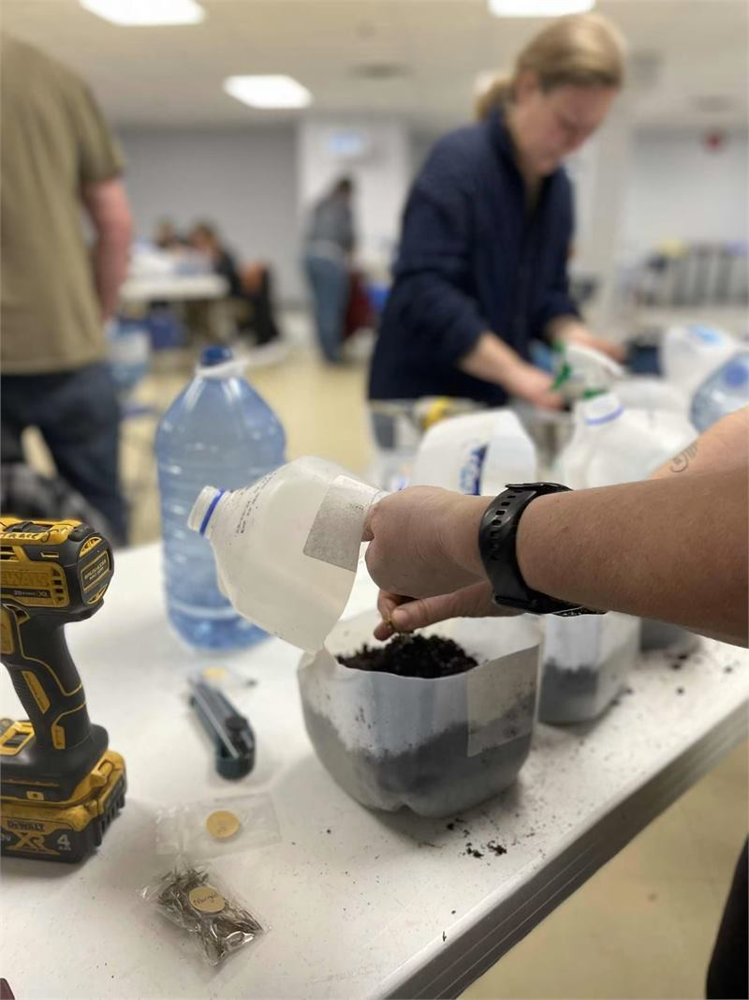
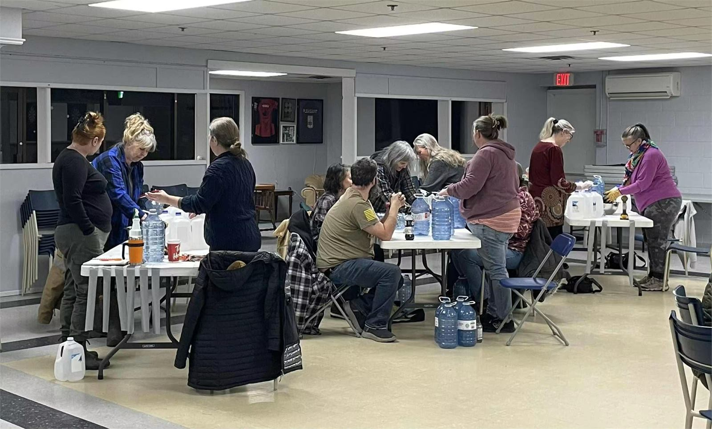
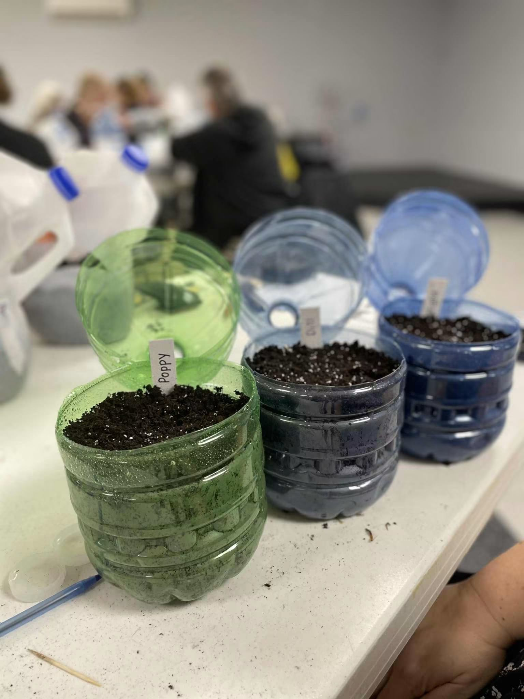

Late winter
Winter sowing
Turning recycling into seed starting containers, and letting the Nova Scotia winter do the hard work for you.

Relaxed, practical sessions for anyone who wants to grow something, whether or not you have ever managed to keep a plant alive.
Cheryl runs workshops through the year whenever there is something worth passing along. They are not classroom affairs. Everyone sits round a table, everyone has a go, and everyone goes home with something they made themselves.
People turn up with all sorts of experience. Some have been gardening for forty years and want to try one particular technique. Others have never planted a seed and are not sure where to start. Both get on fine, because the whole point is doing the thing rather than being told about it.
Questions are very welcome, including the ones you think are too basic to ask. Especially those, really.

One of the most popular sessions we have run. Everyone brings along a few empty milk or water jugs, and by the end of the evening those jugs have turned into little greenhouses that will sit outside all winter and come up in spring.
It sounds unlikely the first time you hear it. Cut the jug most of the way round, fill the bottom with soil, sow your seeds, tape it back together and leave it out in the snow. Nature does the cold stratification for you, the seedlings come up exactly when they are ready, and they are tougher than anything you could raise on a windowsill.
It costs almost nothing, it uses containers that would otherwise go in the recycling, and it works. That is a fairly good summary of the sort of thing we like to teach.
Sessions follow the season, so what is on offer in February looks nothing like what is on offer in July. These are the kinds of things that come round.

Turning recycling into seed starting containers, and letting the Nova Scotia winter do the hard work for you.

Light, warmth, watering and timing. Why most seedlings get leggy, and what to do so yours do not.

Cutting from your own garden and putting it together so it looks intentional rather than accidental.
If there is a topic you would like covered, tell us. Workshops usually happen because somebody asked, and if enough people want the same thing we will put a date in. Growing techniques, crafting with what the garden gives you, planning a bed from scratch, whatever it is, we are happy to hear it.
Tap any photo to see it larger.
Workshops are announced when they are set, which depends on the season, the weather and how many people are interested. There is no fixed calendar.
This is where every workshop gets announced first, along with the date, the venue, what to bring and how to put your name down. If you only do one thing, do this.
Send us a message saying what you would like to learn, and we will let you know when something suitable is coming up. It also helps us decide what to run next.